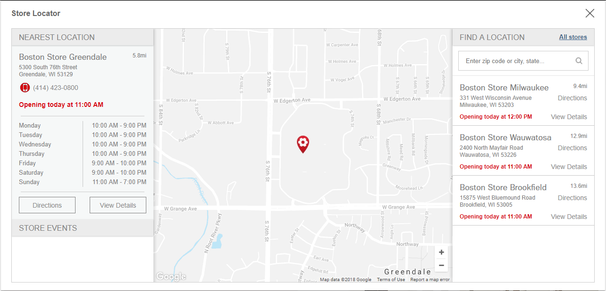

ARTICLE
Store Locator Rewrite
April 22 2018

Bringing it in house.
The first iteration of our storelocator was built by a third party development company that stored our store information. This company has their own
API that they use to pull in the closest stores based on your geo coordinates. I was tasked with re-writing this store locator to bring it in house and show the closest store's events.
With this situation in hand I used php to communicate with their API which was just a straight forward post request with a user's geo coordinates. This request goes
to this third party's API and a response of store data gets returned. I then use this data to create the user interface for the storelocator. Now the build process begins.
First Steps
The design of the storelocator didn't change, this choice made it easier to implement the original design's CSS styling.
This saved me a considerable amount of time and helped me focus on how I was going to build the logic for this application.
The only feature I incorporated from the past locator was the Google map styling.
This styling is an array of objects that has a property for each feature that is styleable. The JavaScript logic that I built was inspired from the
original store locator which cut overall development time by another large percentage.
The most interesting problem to figure out was the configuration of the Google map, and placing each marker on the correct store location. I created a forEach
to place each marker on the Google map with an icon and it's position. Each marker has then a click event that once clicked will display the stores address and other details such as directions.
responseData.forEach(function(store) {
var pt = new google.maps.LatLng(parseFloat(store.lat), parseFloat(store.lng)),
storeInfoWindow = new google.maps.InfoWindow({
content: _infoWindow(store)
});
bounds.extend(pt);
var marker = new google.maps.Marker({
position: pt,
map: map,
icon: '//static.content-bonton.com/pr/BonTon/images/marker.png'
});
marker.addListener('click', function() {
storeInfoWindow.open(map, marker);
});
markersArr.push(marker);
});
What followed after this was pulling in the closest store to a user's location and displaying that store on the Google map.
Below is the function that I created to compute the distance between a user's location and a store. Then returned is a sorted
array based on the first index being the closest
var _findClosestN = function(pt,numberOfResults, markers) {
var closest = [];
for (var i = 0; i < markers.length; i++) {
markers[i].distance = (google.maps.geometry.spherical.computeDistanceBetween(pt, markers[i].getPosition())) / 1609.344;
closest.push(markers[i]);
}
closest.sort(function(a,b) {
return a.distance - b.distance;
});
return closest;
};
Time Formatting
The data returned from the API concerning store hours was probably the most difficult and reoccurring problem I faced.
I had to format the data to look presentable and readable to the customer and while doing so think of all the cases a store may have
unusual hours. This problem ultimately lead me down a path of testing my formatting functions before pushing them out into production.
Doing this prevented any future issues concerning a store being open or closed in a incorrect manner. Going forward on future projects now.
When I deal with a function or set of functions that need to handle multiple use cases. A series of test calls to each function takes place with
every possible use case as input.
In House
Through a number of challenges I faced I was able to finish development on our rewrite. During the process I was the only
developer that worked on this re-write. Making it rather difficult to keep track of my next task, I would mark down my daily progress
and the progress I needed to make the next. This helped me personally in reaching our project deadline. Overall this was an awesome project
to be apart of. This gave me experience using php to interact with an API and to use JavaScript to construct the user interface for the customer.
On average the store locator gets around 400+ hits a day. Before the customer had to manually search using Google. This application cut that time away and
automated the process for the customer. Please feel free to read my other articles covering a few projects that I was a part of at Bon-Ton. Coupons and Deals - Mega Menu